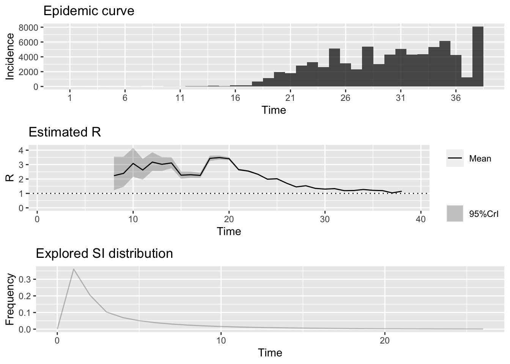

6 The Replication rate, \(R_0\)
6.1 Learning goals and objectives
- Gain an intuitive understanding of \(R_0\).
- Know that the value of \(R_0\) determines how quickly a disease spreads or is eliminated.
- Name the three main drivers of \(R_0\)
- Learn to estimate \(R_0\) from data on the number of infections over time occurring in a population.
6.2 Background
The replication rate, \(R_0\) is a central value in understanding the rate at which a disease is spreading in a susceptible population.
6.2.1 What is \(R_0\)?
\(R_0\) is pronounced “R naught.” The \(R_0\) value is an estimate of the average number of people who will be infected by one contagious person. It specifically applies to a population of people who are susceptible to the disease (have not been vaccinated and are not immune). If a disease has an \(R_0\) of 18, for example, a contagious person will transmit it to an average of 18 other people, assuming that all people in the community are susceptible.
6.2.2 What do \(R_0\) values mean?
The \(R_0\) value of a disease is important to understanding the dynamics of disease spread. Depending on the \(R_0\) value, a disease should follow one of three possible courses in the at-risk community.
- If \(R_0\) is less than 1, each existing infection is spread on average to less than one additional person, leading to decline in the number of cases and eventual end to the spread.
- If \(R_0\) equals 1, each existing infection causes one new infection, leading to stable infection numbers without increase or decrease with time, on average.
- If \(R_0\) is more than 1, each existing infection leads to more than one infection, resulting in growth and potential for epidemic/pandemic conditions.
Importantly, the disease-specific \(R_0\) value pplies when each member of the community is fully vulnerable to the disease with:
- no one vaccinated
- no one immune
- no way to control the spread of the disease
6.2.3 What variables contribute to \(R_0\)?
Three main factors impact the \(R_0\) value of a disease:
Infectious period: The time that an infected person can spread the disease varies from one disease to another. Additional factors such as age of the infected person may affect the period during which a person can infect others. A long period of infectiousness will contribute to a higher \(R_0\) value.
Contact rate: If a person who’s infected with a contagious disease comes into contact with many people who aren’t infected or vaccinated, the disease will spread more quickly. If that person remains at home, in a hospital, or otherwise quarantined while they’re contagious, the disease will spread more slowly. A high contact rate will contribute to a higher \(R_0\) value. The corollary, that lower contact rate, can reduce \(R_0\) is the basis for flattening the curve through social distancing.
Mode of transmission: Airborne illnesses tend to have a higher \(R_0\) value than those spread through contact or through bodily fluids.
6.3 Simulated epidemic model
TODO: plot of incidence along with \(R_0(t)\)
Following code conveyed by John Mallery, we have the following approach for estimating \(R_0\) using a single realization of an epidemic simulation.
Note that there can be failures of estimate.R for certain
inputs. We are working on that.
library(sars2pack)
library(R0)
library(lubridate)
# Generating an epidemic with given parameters
mGT <- generation.time("gamma", c(3,1.5))
set.seed(5432) # always initialize when simulating!
mEpid <- sim.epid(epid.nb=1, GT=mGT, epid.length=30,
family="poisson", R0=1.67, peak.value=500)
mEpid <- mEpid[,1]
# Running estimations
est <- estimate.R(epid=mEpid, GT=mGT, methods=c("EG","ML","TD"), begin=1, end=30)We modified the plotting function in R0 which
was calling dev.new too often. Use plot2.

The plotfit2 function is also useful. These fits
look identical but they are not.

6.4 Real data examples
Now we extract information from the time-series table and obtain estimates of \(R_0\) under exponential growth.
6.4.1 Hubei Province
We are able to use exponential growth and time-dependent models with this data, using generation time model from a recent Annals of Internal Medicine paper.
The incidence data probably need smoothing, and the time-dependent model has unreasonable fluctuations.
dates = lubridate::as_date(mdy(names(mar19df)[-c(1:4)]))
hubdat = as.numeric(get_series(province="Hubei", country="China",
dataset=sars2pack::mar19df))
names(hubdat) = dates
mGT <- generation.time("gamma", c(5.8, 0.95)) # from DOI 10.7326/M20-0504
mGT <- generation.time("gamma", c(3.96, 4.75)) # from DOI 10.7326/M20-0504
hubdat.filt = trim_leading_values(c(hubdat[1], diff(hubdat)))
est.EG <- estimate.R(epid=hubdat.filt, GT=mGT,
methods=c("EG", "TD"), begin=1L, end=as.integer(length(hubdat.filt)))
est.EG## Reproduction number estimate using Exponential Growth method.
## R : 0.8190473[ 0.8164334 , 0.821658 ]
##
## Reproduction number estimate using Time-Dependent method.
## 2.020789 0 3.0142 3.134995 3.32356 3.865543 1.596743 0 1.878637 2.079345 ...
6.4.2 Italy
For Italy, only the EG model seems to work, with the Annals of Internal Medicine generation time model. It fits the data reasonably well, but the data seems to include a reporting gap.
itdat = as.numeric(get_series(province="", country="Italy",
dataset=sars2pack::mar19df))
names(itdat) = dates
itdat.filt = trim_leading_values(c(itdat[1], diff(itdat)))
est.EG <- estimate.R(epid=itdat.filt, GT=mGT,
methods=c("EG"), begin=1L, end=as.integer(length(itdat.filt)))
est.EG## Reproduction number estimate using Exponential Growth method.
## R : 1.968466[ 1.957161 , 1.979874 ]
6.4.3 New York City
TODO: plot of incidence along with \(R_0(t)\)
nyt = nytimes_county_data() %>%
dplyr::filter(county=='New York City' & subset=='confirmed') %>%
dplyr::arrange(date)
nytdat = nyt$count
# do we need to chop zeros off? Seems like not.
nytdat.filt = c(nytdat[1], diff(nytdat))
est <- estimate.R(epid=nytdat.filt, GT=mGT,
methods=c("EG","TD","ML"), begin=1L, end=as.integer(length(nytdat.filt)))We can also use the package EpiEstim to perform time-dependent \(R_0\) calculations.
library(EpiEstim)
epiestim = EpiEstim::estimate_R(nytdat.filt, method = "parametric_si",
config = EpiEstim::make_config(list(
mean_si = 3.96, std_si = 4.75)))
invisible(plot(epiestim))